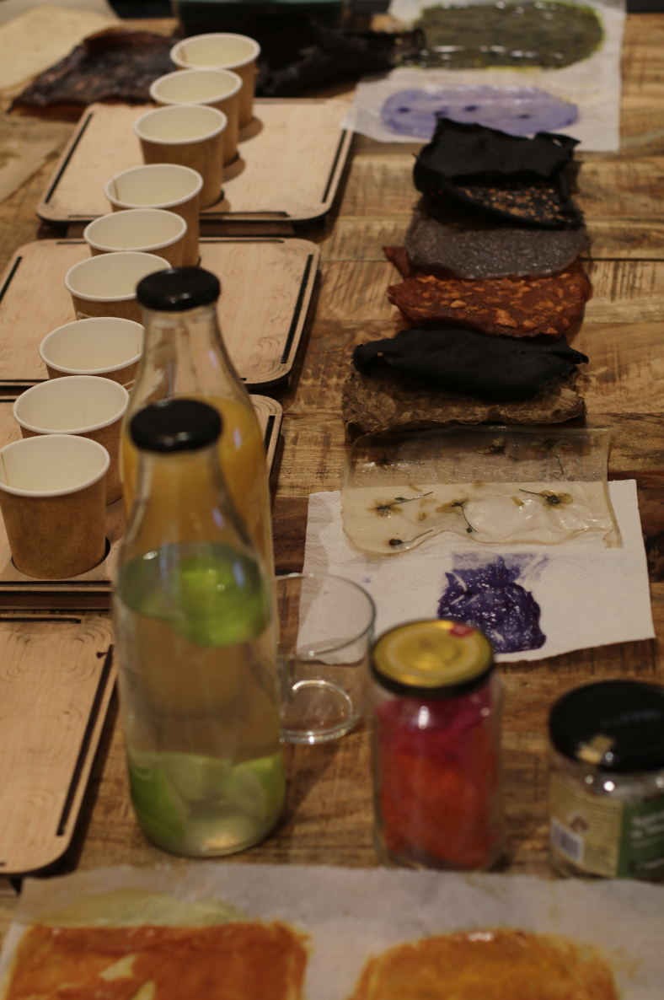
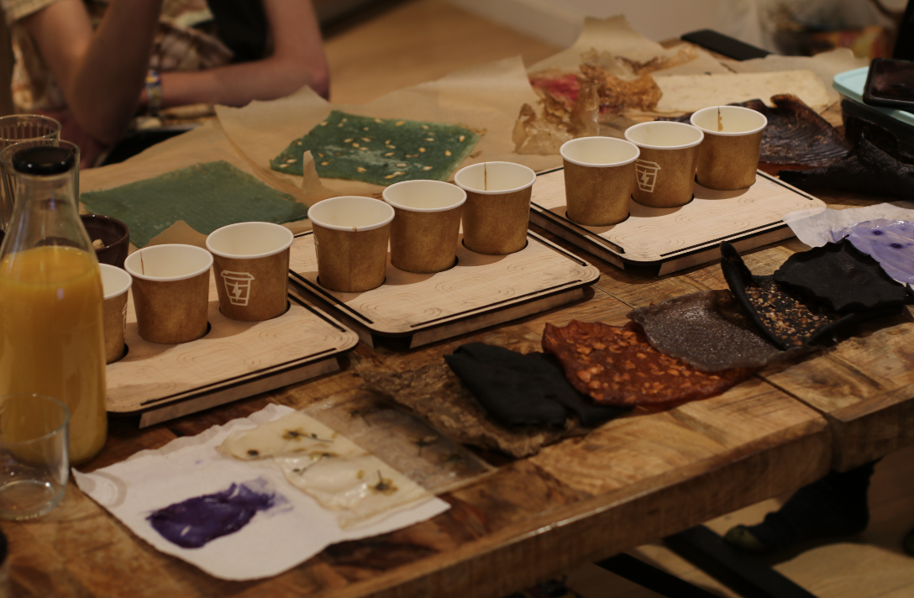
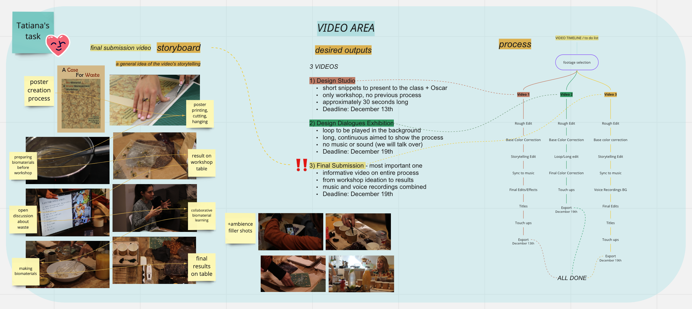

This week started with a holiday on Monday December 6th, which my Design intervention group utilized to host our Biomaterials workshop. Our strategy was for each of us to make 6 biomaterials in advance, in order to have a vast selection of colours, textures and ingredients to present to our guests. In addition to this, we created laser-cut plywood boards to contain the ingredients we were providing them and add an interactive, fun element to the workshop.


We also prepared a presentation for us to introduce the discussion around the topic of waste, then teach the participants some notions around biomaterials and facts about them. We included knowledge from our meetings with Tomas, Mariana, Roger, Jana and Anastasia, mainly open questions for discussion about personal waste, thoughts on biomaterials, how we live with our waste and more. This served as an ice-breaker at the beginning of the workshop.
Following the open discussion slides, we shared informational content about waste specifically in Spain, what biomaterials are and could be used for, the breakdown of commonly used ingredients and recipes which we would be following. Most of the resources we used were from Elisava’s Bioplastic cookbook, IAAC/FABLAB’s information on biomaterials, Materiom and other sources listed in our miro board.
On the day of the workshop, 5 people showed up: 3 from Elisava and 2 from IAAC. Although they were all designers, each one came from a somewhat different background. We were pleased to see that one participant was just starting her design journey and one was much further along on his academic path, having already acquired multiple degrees in the field. My main job was to film the process and take photos with my camera, which I would later edit into a comprehensive video of our entire Design Intervention process. This is the general board overview of my to-do list surroundng the video editing, but you can find more about the process of it in my weekly reflections.

Overview of the Video editing process
While we were going through the slideshow and presenting information, it didn’t feel as though we were the teachers and them the students. It felt much more like an open dialogue which is exactly what we aimed for. They all had valuable things to say and would jump in at points to offer their opinion. We ended up talking about large topics such as supply chains, our flawed designed waste and recycling systems, how much impact the consumer should/does have, varying types of waste, and what the realistic possibilities for waste replacement with biomaterials is. We then created a new biomaterial all together to put into practice what we had just learned.
We had asked the guests to try to walk out of the workshop with more awareness around the materials they encountered. We wanted them to note what materials make up their waste and if they could be better suited as biomaterials, and overall try and introduce the concepts we brought up in the workshop. This is the feedback we received from them:
Leire’s feedback
"The workshop was a great opportunity to learn more about bio-materials and waste management. I am a person who is really interested in this topic and to be honest, even if I had read some articles before, I had never tried the practical side until that day. Once we finished I felt curious, excited and happy. Now, I am thinking I will try to get more informed about the subject by myself, and also that I might do my master's thesis about something related with this.
Moreover, the discussion formed about the plastic use was nice. I am aware that if laws do not change the practice will not neither. Also, reducing plastic is a challenge to all humans, and creating new materials can be one step forward it."
Candela’s feedback
"I really enjoyed the workshop because it opened me up to new concepts and a whole new world that I was not really aware of. Even though all of you were older and more experienced I had a great time listening to interesting facts about sustainability, carbon footprint, etc. I never got to actually try making biomaterials, but "the talk part" was really great. I think it should be a subject to introduce to new designers like me (if you can call us that way hahaha) because it really opens you up to a way of doing that we need for the world we live in. We can't learn our profession if we don't take into account things we discussed. Moreover, the actual biomaterials were sooo cool and with more investigation and a collective intention to start implementing them I think they can truly change the way we make some of the objects and things we have around.
P.S my favourite was the chia seeds one :)
Thanks for the workshop!!"
We are still waiting for messages from the other participants.
Here is the presentation we displayed during the workshop:
My thoughts after the workshop
Considering that this was my (and Marina + Pippa’s) first-ever workshop hosting, I believe it turned out to be great. I was afraid we would have awkward silences, or nobody interested in offering their view on our debates, but it turned out to be quite the opposite. Actually, we spent more time than planned talking about the topic of waste, bouncing back and forth about various ideas or problems we had observed from our day-to-day lives. Following that, instead of having each participant make their own biomaterial, as imagined, we instead found ourselves working all together. The whole workshop turned out to be a large collaborative effort.
Everybody was also very engaged with the tactility of the materials on display, and it was great to see them touching the biomaterials we made, passing them around, asking questions and even smelling them. Rather than focus on making waste replacements or sculptures, we were happy to have more engagement and critical dialogue, which is something that I believe can stay with the participants longer throughout their personal journey.
All of this being said, I feel uncertainty when I think about pursuing the topic of biomaterials. An element that popped into my mind over and over again was the lack of scaling-up of biomaterials and the structural problems caused by our dependence on oil, fossil fuels and plastic included. Regardless of how well the workshop went, I am not sure if DIY-ing my way through waste is the approach I want to take for the remainder of the masters.
Slowly, I am realising how much I enjoy interaction design and having people engage with topics, visuals or spaces they are unfamiliar with. This is why I enjoy open debates, the tactility of biomaterials, teaching/learning, electronics, visual arts and interactive installations, which are topics that seemingly differ quite a lot from each other. During the winter break I will have to reflect more on the paths I wish to pursue, because as of now I feel like I may need a shift when it comes to narrowing my focus.